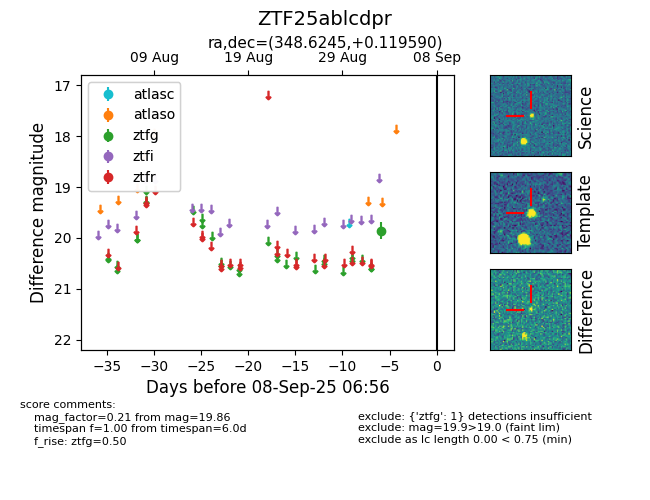

FINK: ZTF25ablcdpr
Lasair: ZTF25ablcdpr
ALeRCE: ZTF25ablcdpr
ZTF25ablcdpr (ztf,fink)
equatorial (ra, dec) = (348.6245,+0.11959)
galactic (l, b) = (78.4284,-54.15455)

last ztfg=19.86
1 ztfg detections